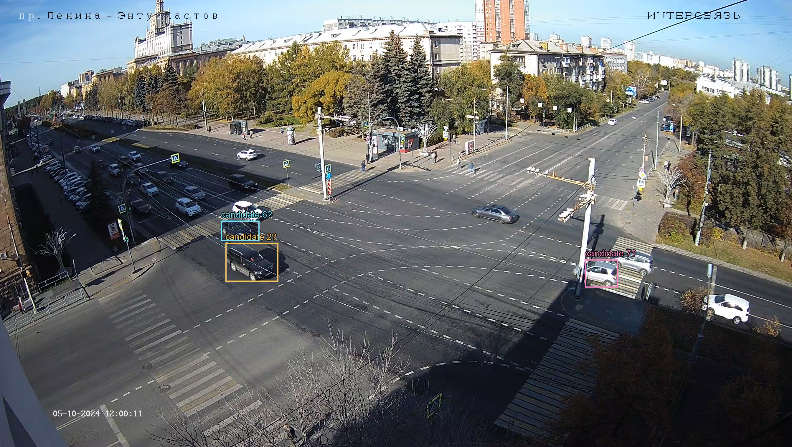
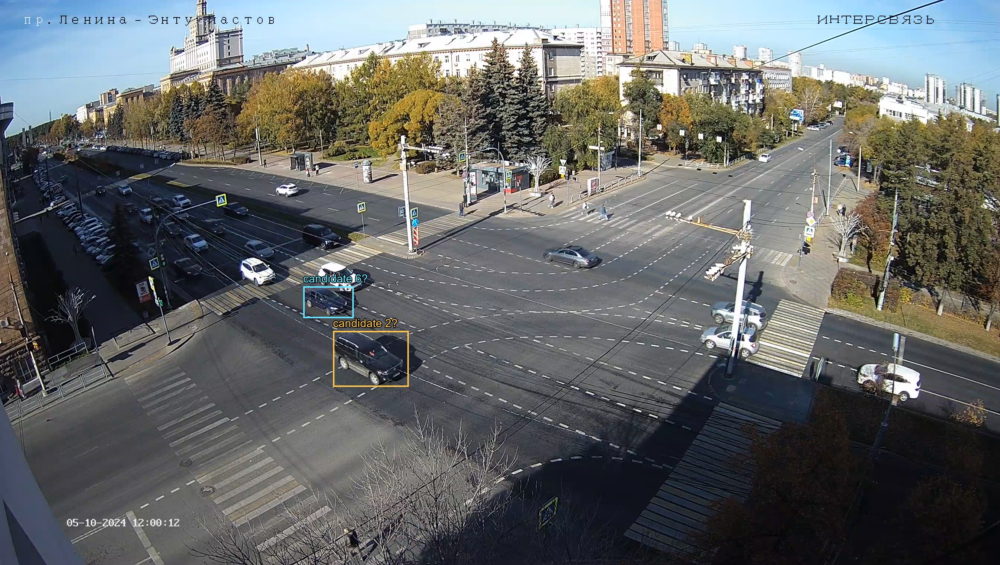
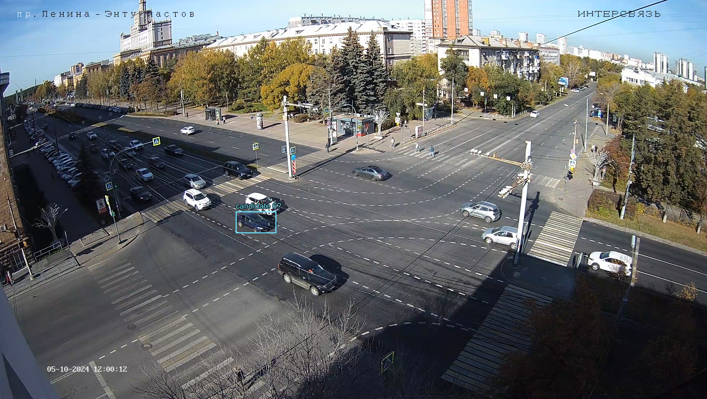
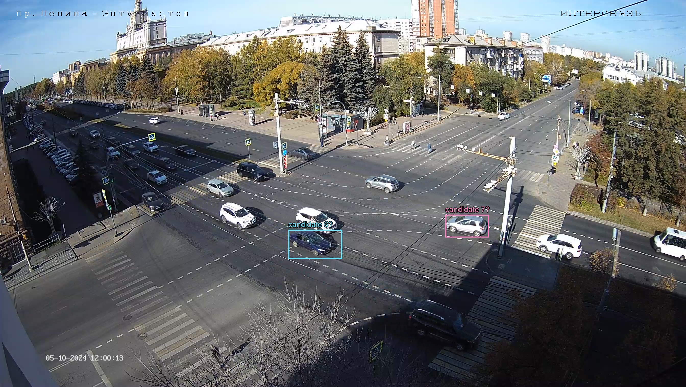
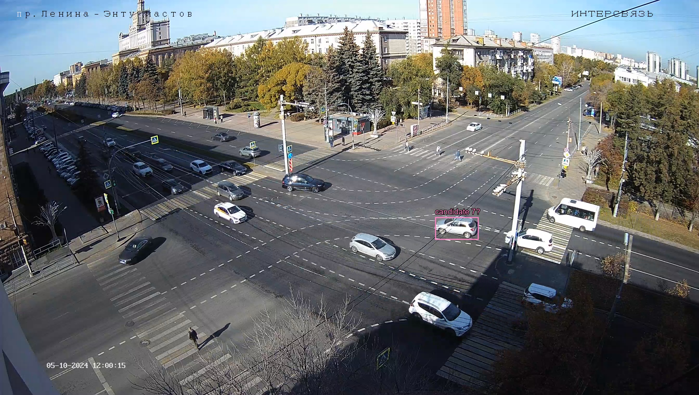
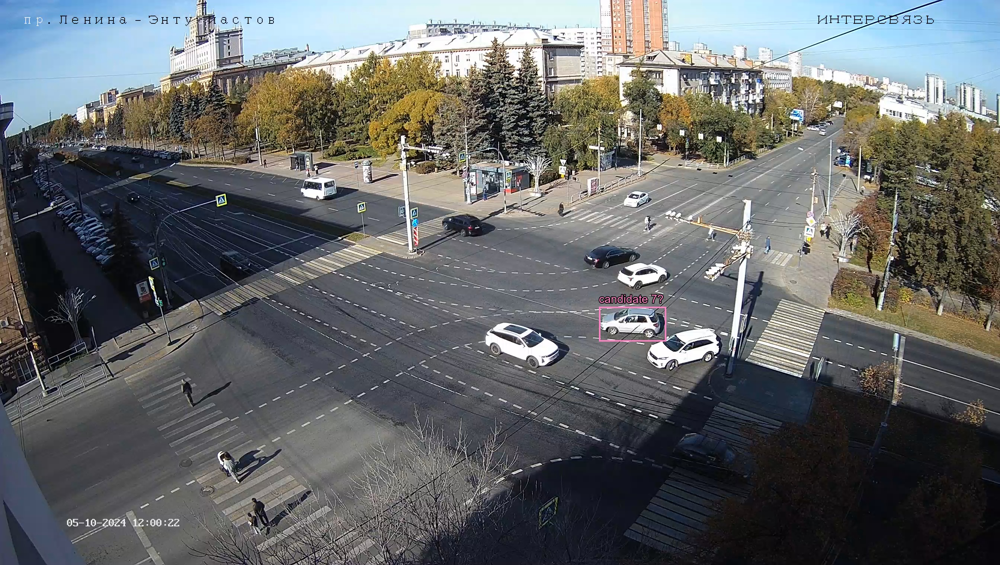
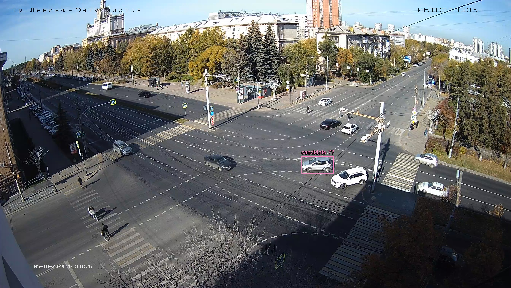

Прежняя привязка не прошла проверку. Здесь сохранены конкретные предположения, которые нужно проверить: жёлтая рамка — кандидат ID2, голубая — ID6, розовая — ID7. Номера в кадре пока предположительные. Разметка не получена из результата подгонки.
Нужно определить, те ли это машины и соответствует ли их манёвр форме трека ниже. Особенно важен ID7: в JSON он входит и выходит через E. Даже подтверждение манёвра не доказывает совпадение часов.
Исходные траектории JSON в собственной системе нормированных координат, без совмещения с видео:
Для просмотра движения выберите lenina_entuziastov.mp4. Файл остаётся локальным. Кнопки переходят к точкам старых гипотез, не к подтверждённым JSON-кадрам.






